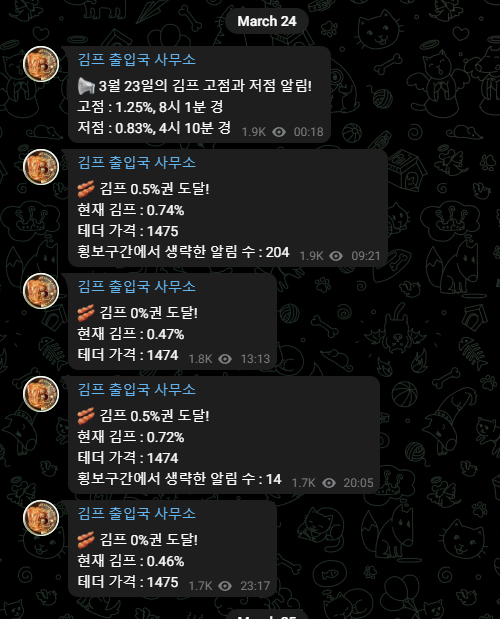
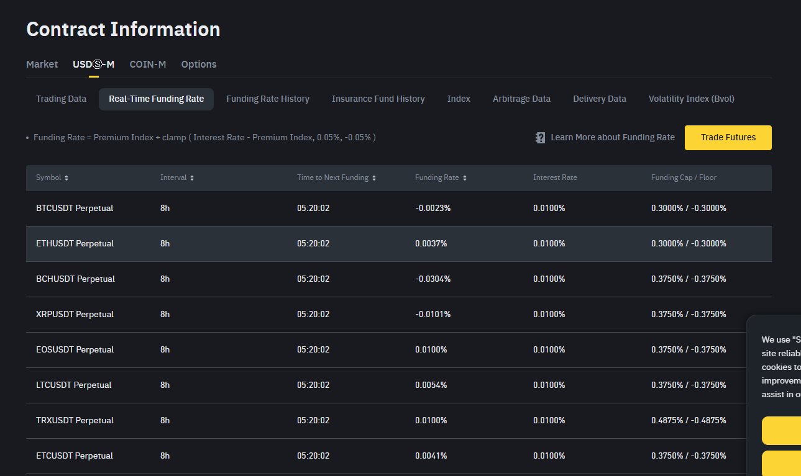
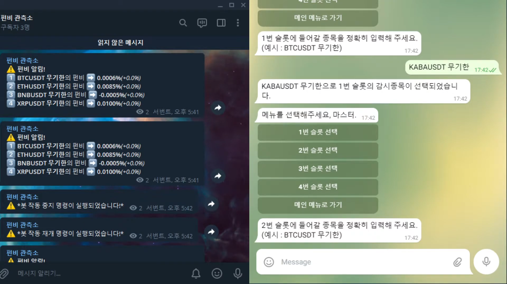
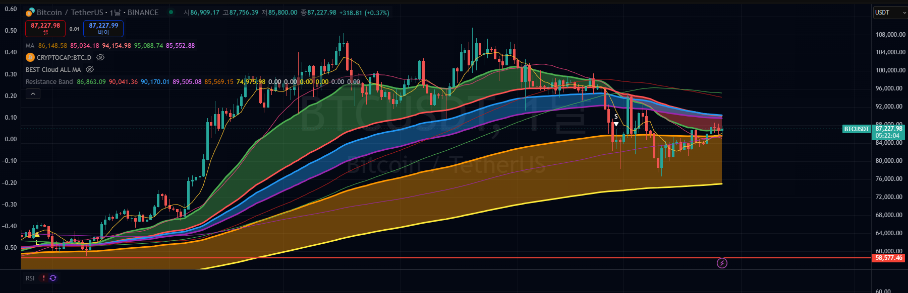
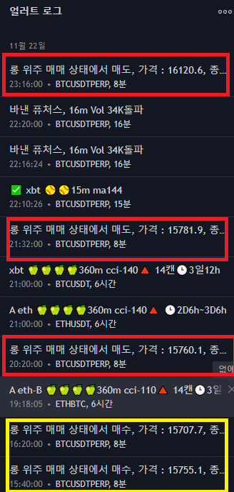

현재 [김프 출입국 사무소]를 개발 및 운영하고 있습니다.
단순한 코딩을 넘어 직접 크립토 투자 시장에서 필요한 정보를 봇을 통해 수집하고 분석해 본 경험을 바탕으로,
실제 사용자에게 꼭 필요한 매매 자동화 솔루션을 제공합니다.
다수의 외주 프로젝트를 성공적으로 수행한 경험이 있습니다.
제가 할 수 있는 일 (항목을 클릭하여 상세 내용을 확인하세요)
텔레그램 봇 개발
필요한 정보를 수집하고, 가공 및 정리하여 텔레그램 채널에 자동 배포하는 봇을 개발할 수 있습니다.

* 김치 프리미엄을 계산하여 변동 시 마다 텔레그램 채널에 알리는 봇
웹사이트 크롤링 및 파싱
위 봇 개발과 연계하여, 특정 정보를 얻기 위해 웹사이트를 자동으로 크롤링 및 파싱할 수 있습니다.


* 바이낸스 실시간 펀딩비를 크롤링하여 텔레그램에서 변동을 관측하고, 봇을 대화방에서 직접 조정하는 프로젝트
TradingView 스크립트 제작
- 여러 지표를 조합하거나 새로운 기준으로 사용자 정의 지표를 제작
- 매수/매도 신호 발생 시 텔레그램 등 외부 채널로 알림 전송, 바이낸스 API와 연동하여 자동 매매 구현 가능
- 모든 로직은 의뢰자 분께서 원하는 방식으로 지정 (저는 매수/매도 방법에 대한 조언은 해드릴 수 없습니다)


* TradingView 얼러트 기능과 지표(Script)를 사용 가능 범위 내에서 자유자재로 다룰 수 있습니다.
* 기존 스크립트(지표)의 소스 코드를 읽고 원하는 기능을 추가/제거, 수정도 가능합니다.
📩 외주 문의 & 결제
외주 문의는 아래 텔레그램으로 연락해 주세요.
결제는 신상 보호를 위해 크립토로 진행하는 것을 선호합니다.